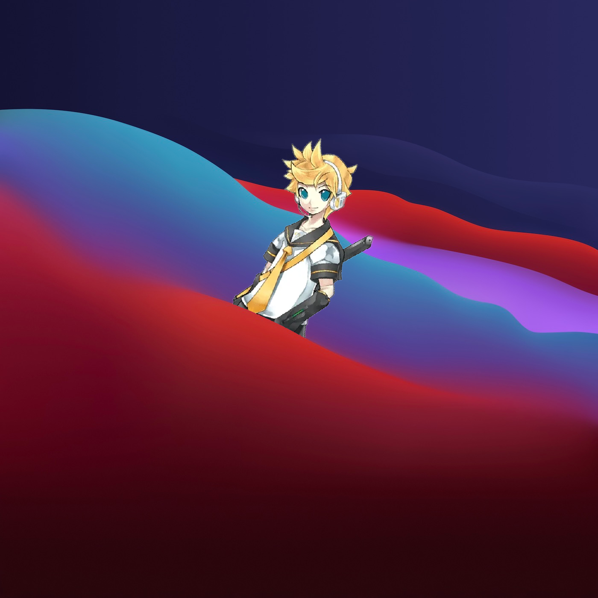

Mac OS 9 Len themed
Mac OS X 10.3 Tiger Len themed

Mac OS X 10.5 Leopard Len themed
Mac OS X 10.7 Lion Len themed

MacOS 10.14 Mojave Len themed

MacOS 11 Big Sur Len themed

MacOS 12 Monterey Len themed

MacOS 13 Ventura Len themed

MacOS 14 Sonoma Len themed

Linux Mint, with trans colours or something